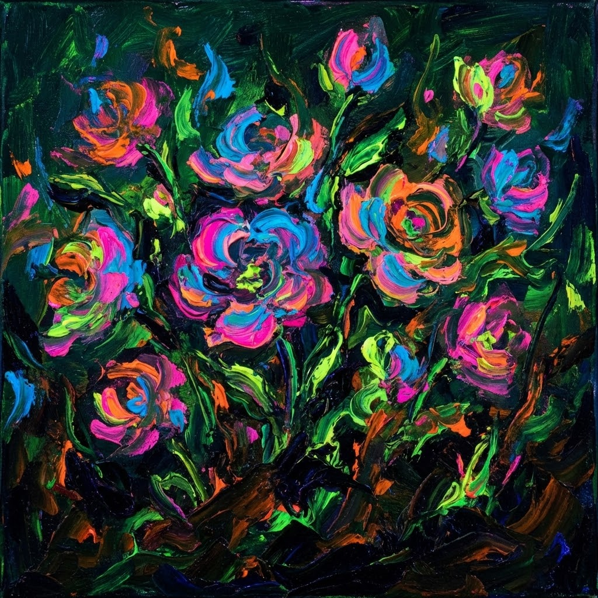

Colori dal buio

Primavera, estate quasi.
Al vostro apparire nei prati e lungo i bordi delle vie
so che un anno è già passato
ma lo stupore di ogni volta nel tempo si è fermato.
Al vostro apparire nei prati e lungo i bordi delle vie
so che un anno è già passato
ma lo stupore di ogni volta nel tempo si è fermato.
Piccoli fiori, elettriche fiammelle su cespugli a gruppo
quale pittore potrà mai uguagliare di voi il colore
né del cielo né del mare
sia freddo che bollente, io direi fosforescente.
quale pittore potrà mai uguagliare di voi il colore
né del cielo né del mare
sia freddo che bollente, io direi fosforescente.
Con la coda dell'occhio percepisco le fiamme dell'estate,
uno ad uno il colore è sia chiaro che brillante
piccole stelle adagiate su verdi rami.
uno ad uno il colore è sia chiaro che brillante
piccole stelle adagiate su verdi rami.
Come possono petali di luce ed energia
sbocciare dal buio,
come possono tali meraviglie
lasciare indifferenti i più.
sbocciare dal buio,
come possono tali meraviglie
lasciare indifferenti i più.
Paola Spremulli